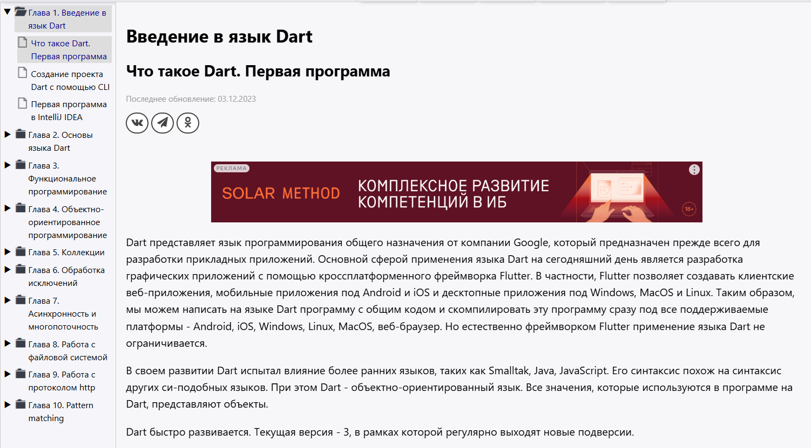
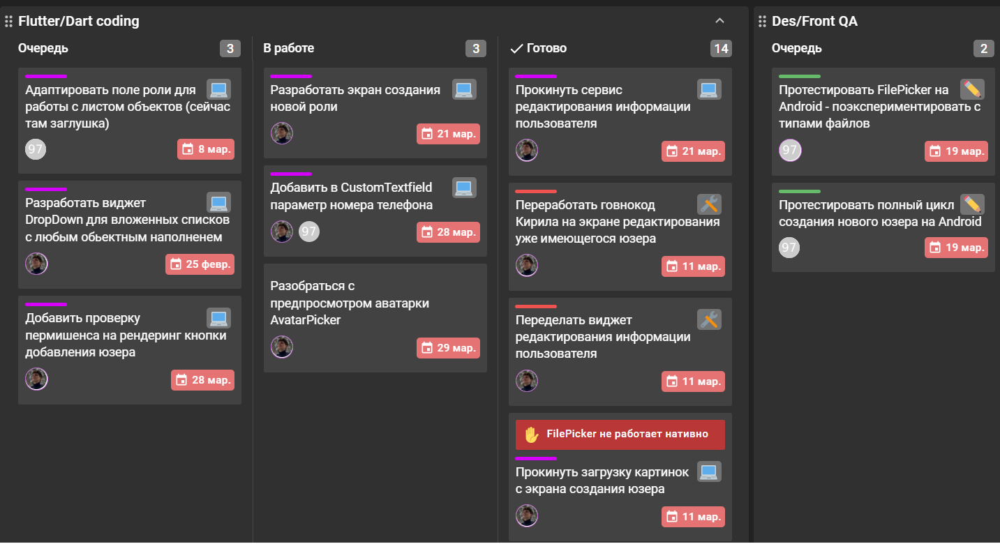
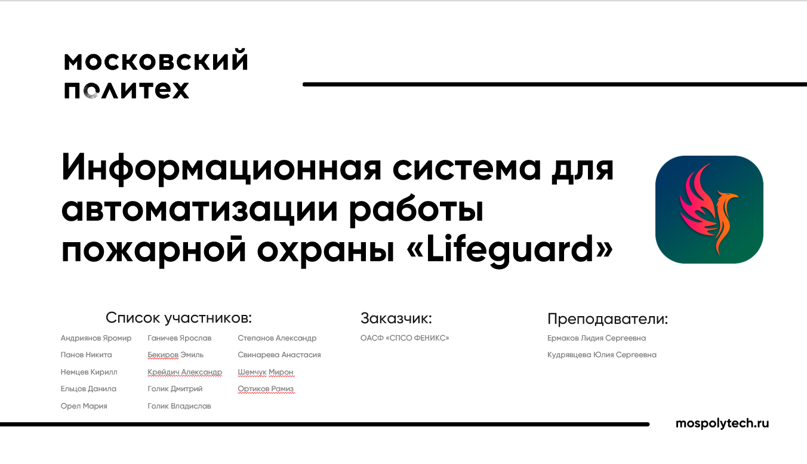

Изучение технологий
На первом этапе я изучил язык программирования
Dart и фреймворк Flutter —
основные инструменты для разработки мобильной версии приложения
Lifeguard. Ознакомился с основами синтаксиса, принципами работы с
виджетами, состоянием, навигацией и подключением стилей. Это дало
базу для реализации интерфейса и логики приложения.

Обсуждение задач в Kaiten
Команда использует сервис Kaiten для планирования и
распределения задач. Все участники активно обсуждают текущие и
предстоящие задачи, а также фиксируют прогресс на доске с колонками
Backlog, В работе и Готово. Такой подход
помогает эффективно организовать рабочий процесс и контролировать
сроки выполнения.

Презентация проекта
Команда подготовила презентацию проекта Lifeguard для представления на встрече с преподавателями и кураторами. В презентации были отражены цели и задачи проекта, ключевые модули системы, этапы разработки, а также план взаимодействия с организацией-партнёром.
Использовались наглядные диаграммы и прототипы интерфейса для лучшего понимания.
Смотреть презентацию проекта (PDF)
